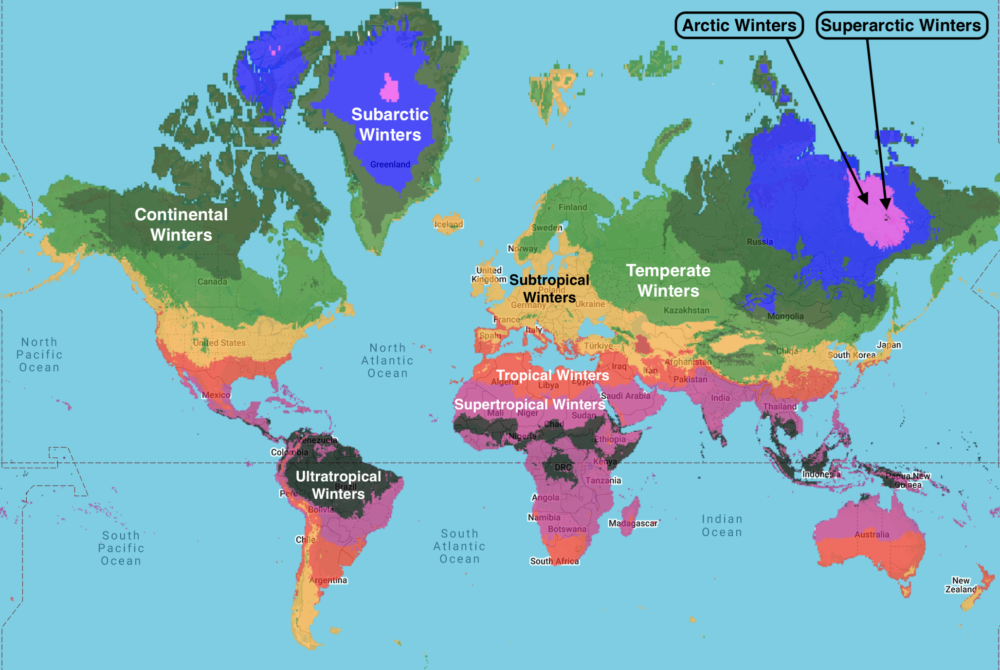
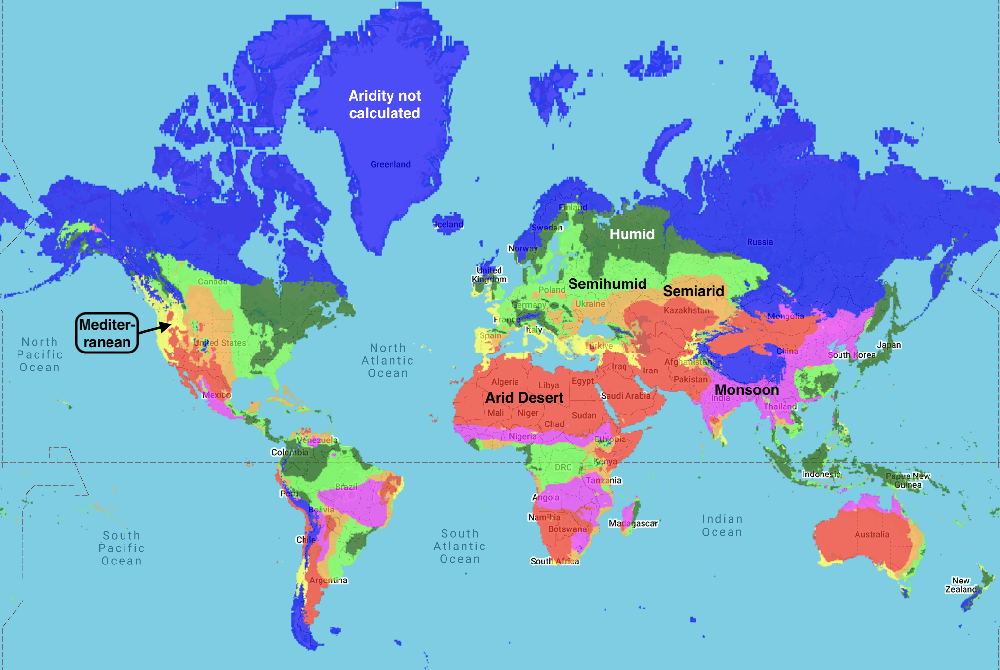

To request a map of any region, country, or state to be added to this webpage (or if you have any questions or comments), feel free to contact me at calebisaacdickinson@gmail.com
Because of significant discrepancies between datasets covering oceans and Antarctica, and the particular difficulties involved in accurately measuring these regions, we have limited our analysis to land-based (non-Antarctic) data. Current oceanic and Antarctic datasets lack the accuracy necessary for the standards of this website.
Winter Maps
Global distribution of winter categories — 1961-1990 normals

Global distribution of winter categories — 2025 High Emissions scenario (business as usual)

Global distribution of winter categories — 2100 High Emissions scenario (business as usual)
USA distribution of winter categories — 1961-1990 normals

USA distribution of winter categories — 2025 High Emissions scenario (business as usual)

USA distribution of winter categories — 2100 High Emissions scenario (business as usual)

Aridity Maps
Global distribution of aridity categories — 1961-1990 normals

Global distribution of aridity categories — 2025 High Emissions scenario (business as usual)
Global distribution of aridity categories — 2100 High Emissions scenario (business as usual)

USA distribution of aridity categories — 1961-1990 normals

USA distribution of aridity categories — 2025 High Emissions scenario (business as usual)

USA distribution of aridity categories — 2100 High Emissions scenario (business as usual)

Summer Maps
Global distribution of summer categories — 1961-1990 normals

Global distribution of summer categories — 2025 High Emissions scenario (business as usual)

Global distribution of summer categories — 2100 High Emissions scenario (business as usual)

USA distribution of summer categories — 1961-1990 normals

USA distribution of summer categories — 2025 High Emissions scenario (business as usual)

USA distribution of summer categories — 2100 High Emissions scenario (business as usual)

USA State Maps
Alabama — 1961-1990 normals
Alabama — 2025 High Emissions scenario (business as usual)

Alabama — 2100 High Emissions scenario (business as usual)

Alaska — 1961-1990 normals

Alaska — 2025 High Emissions scenario (business as usual)

Alaska — 2100 High Emissions scenario (business as usual)

Arizona — 1961-1990 normals
Arizona — 2025 High Emissions scenario (business as usual)
Arizona — 2100 High Emissions scenario (business as usual)

Arkansas — 1961-1990 normals

Arkansas — 2025 High Emissions scenario (business as usual)

Arkansas — 2100 High Emissions scenario (business as usual)

California — 1961-1990 normals

California — 2025 High Emissions scenario (business as usual)

California — 2100 High Emissions scenario (business as usual)

Colorado — 1961-1990 normals

Colorado — 2025 High Emissions scenario (business as usual)

Colorado — 2100 High Emissions scenario (business as usual)

Connecticut — 1961-1990 normals

Connecticut — 2025 High Emissions scenario (business as usual)

Connecticut — 2100 High Emissions scenario (business as usual)

Delaware — 1961-1990 normals

Delaware — 2025 High Emissions scenario (business as usual)
Delaware — 2100 High Emissions scenario (business as usual)

Florida — 1961-1990 normals
Florida — 2025 High Emissions scenario (business as usual)
Florida — 2100 High Emissions scenario (business as usual)

Georgia — 1961-1990 normals
Georgia — 2025 High Emissions scenario (business as usual)

Georgia — 2100 High Emissions scenario (business as usual)

Hawaii — 1961-1990 normals

Hawaii — 2025 High Emissions scenario (business as usual)

Hawaii — 2100 High Emissions scenario (business as usual)

Idaho — 1961-1990 normals

Idaho — 2025 High Emissions scenario (business as usual)

Idaho — 2100 High Emissions scenario (business as usual)

Illinois — 1961-1990 normals

Illinois — 2025 High Emissions scenario (business as usual)

Illinois — 2100 High Emissions scenario (business as usual)

Indiana — 1961-1990 normals
Indiana — 2025 High Emissions scenario (business as usual)

Indiana — 2100 High Emissions scenario (business as usual)

Iowa — 1961-1990 normals
Iowa — 2025 High Emissions scenario (business as usual)

Iowa — 2100 High Emissions scenario (business as usual)

Kansas — 1961-1990 normals
Kansas — 2025 High Emissions scenario (business as usual)

Kansas — 2100 High Emissions scenario (business as usual)

Kentucky — 1961-1990 normals

Kentucky — 2025 High Emissions scenario (business as usual)
Kentucky — 2100 High Emissions scenario (business as usual)

Louisiana — 1961-1990 normals

Louisiana — 2025 High Emissions scenario (business as usual)

Louisiana — 2100 High Emissions scenario (business as usual)

Maine — 1961-1990 normals

Maine — 2025 High Emissions scenario (business as usual)
Maine — 2100 High Emissions scenario (business as usual)

Maryland — 1961-1990 normals
Maryland — 2025 High Emissions scenario (business as usual)

Maryland — 2100 High Emissions scenario (business as usual)

Massachusetts — 1961-1990 normals

Massachusetts — 2025 High Emissions scenario (business as usual)
Massachusetts — 2100 High Emissions scenario (business as usual)

Michigan — 1961-1990 normals

Michigan — 2025 High Emissions scenario (business as usual)
Michigan — 2100 High Emissions scenario (business as usual)

Minnesota — 1961-1990 normals
Minnesota — 2025 High Emissions scenario (business as usual)
Minnesota — 2100 High Emissions scenario (business as usual)

Mississippi — 1961-1990 normals

Mississippi — 2025 High Emissions scenario (business as usual)

Mississippi — 2100 High Emissions scenario (business as usual)

Missouri — 1961-1990 normals
Missouri — 2025 High Emissions scenario (business as usual)

Missouri — 2100 High Emissions scenario (business as usual)

Montana — 1961-1990 normals

Montana — 2025 High Emissions scenario (business as usual)

Montana — 2100 High Emissions scenario (business as usual)

Nebraska — 1961-1990 normals

Nebraska — 2025 High Emissions scenario (business as usual)
Nebraska — 2100 High Emissions scenario (business as usual)

Nevada — 1961-1990 normals

Nevada — 2025 High Emissions scenario (business as usual)

Nevada — 2100 High Emissions scenario (business as usual)

New Hampshire — 1961-1990 normals

New Hampshire — 2025 High Emissions scenario (business as usual)
New Hampshire — 2100 High Emissions scenario (business as usual)

New Jersey — 1961-1990 normals
New Jersey — 2025 High Emissions scenario (business as usual)

New Jersey — 2100 High Emissions scenario (business as usual)

New Mexico — 1961-1990 normals

New Mexico — 2025 High Emissions scenario (business as usual)

New Mexico — 2100 High Emissions scenario (business as usual)

New York — 1961-1990 normals

New York — 2025 High Emissions scenario (business as usual)
New York — 2100 High Emissions scenario (business as usual)

North Carolina — 1961-1990 normals
North Carolina — 2025 High Emissions scenario (business as usual)
North Carolina — 2100 High Emissions scenario (business as usual)

North Dakota — 1961-1990 normals
North Dakota — 2025 High Emissions scenario (business as usual)

North Dakota — 2100 High Emissions scenario (business as usual)

Ohio — 1961-1990 normals
Ohio — 2025 High Emissions scenario (business as usual)
Ohio — 2100 High Emissions scenario (business as usual)

Oklahoma — 1961-1990 normals

Oklahoma — 2025 High Emissions scenario (business as usual)
Oklahoma — 2100 High Emissions scenario (business as usual)

Oregon — 1961-1990 normals

Oregon — 2025 High Emissions scenario (business as usual)

Oregon — 2100 High Emissions scenario (business as usual)

Pennsylvania — 1961-1990 normals
Pennsylvania — 2025 High Emissions scenario (business as usual)
Pennsylvania — 2100 High Emissions scenario (business as usual)

Rhode Island — 1961-1990 normals
Rhode Island — 2025 High Emissions scenario (business as usual)
Rhode Island — 2100 High Emissions scenario (business as usual)

South Carolina — 1961-1990 normals

South Carolina — 2025 High Emissions scenario (business as usual)
South Carolina — 2100 High Emissions scenario (business as usual)

South Dakota — 1961-1990 normals

South Dakota — 2025 High Emissions scenario (business as usual)
South Dakota — 2100 High Emissions scenario (business as usual)

Tennessee — 1961-1990 normals

Tennessee — 2025 High Emissions scenario (business as usual)
Tennessee — 2100 High Emissions scenario (business as usual)

Texas — 1961-1990 normals

Texas — 2025 High Emissions scenario (business as usual)

Texas — 2100 High Emissions scenario (business as usual)

Utah — 1961-1990 normals

Utah — 2025 High Emissions scenario (business as usual)

Utah — 2100 High Emissions scenario (business as usual)

Vermont — 1961-1990 normals
Vermont — 2025 High Emissions scenario (business as usual)

Vermont — 2100 High Emissions scenario (business as usual)

Virginia — 1961-1990 normals
Virginia — 2025 High Emissions scenario (business as usual)

Virginia — 2100 High Emissions scenario (business as usual)

Washington — 1961-1990 normals

Washington — 2025 High Emissions scenario (business as usual)

Washington — 2100 High Emissions scenario (business as usual)

West Virginia — 1961-1990 normals
West Virginia — 2025 High Emissions scenario (business as usual)
West Virginia — 2100 High Emissions scenario (business as usual)

Wisconsin — 1961-1990 normals
Wisconsin — 2025 High Emissions scenario (business as usual)
Wisconsin — 2100 High Emissions scenario (business as usual)

Wyoming — 1961-1990 normals

Wyoming — 2025 High Emissions scenario (business as usual)

Wyoming — 2100 High Emissions scenario (business as usual)

Canadian Maps
Alberta — 1961-1990 normals

Alberta — 2025 High Emissions scenario (business as usual)

Alberta — 2100 High Emissions scenario (business as usual)

British Columbia — 1961-1990 normals

British Columbia — 2025 High Emissions scenario (business as usual)

British Columbia — 2100 High Emissions scenario (business as usual)

Manitoba — 1961-1990 normals

Manitoba — 2025 High Emissions scenario (business as usual)

Manitoba — 2100 High Emissions scenario (business as usual)

New Brunswick — 1961-1990 normals

New Brunswick — 2025 High Emissions scenario (business as usual)
New Brunswick — 2100 High Emissions scenario (business as usual)

Newfoundland and Labrador — 1961-1990 normals

Newfoundland and Labrador — 2025 High Emissions scenario (business as usual)

Newfoundland and Labrador — 2100 High Emissions scenario (business as usual)

Northwest Territories — 1961-1990 normals

Northwest Territories — 2025 High Emissions scenario (business as usual)

Northwest Territories — 2100 High Emissions scenario (business as usual)

Nova Scotia — 1961-1990 normals
Nova Scotia — 2025 High Emissions scenario (business as usual)

Nova Scotia — 2100 High Emissions scenario (business as usual)

Nunavut — 1961-1990 normals

Nunavut — 2025 High Emissions scenario (business as usual)

Nunavut — 2100 High Emissions scenario (business as usual)

Ontario — 1961-1990 normals

Ontario — 2025 High Emissions scenario (business as usual)

Ontario — 2100 High Emissions scenario (business as usual)

Prince Edward Island — 1961-1990 normals
Prince Edward Island — 2025 High Emissions scenario (business as usual)

Prince Edward Island — 2100 High Emissions scenario (business as usual)

Quebec — 1961-1990 normals
Quebec — 2025 High Emissions scenario (business as usual)

Quebec — 2100 High Emissions scenario (business as usual)

Saskatchewan — 1961-1990 normals

Saskatchewan — 2025 High Emissions scenario (business as usual)

Saskatchewan — 2100 High Emissions scenario (business as usual)

Yukon — 1961-1990 normals

Yukon — 2025 High Emissions scenario (business as usual)

Yukon — 2100 High Emissions scenario (business as usual)